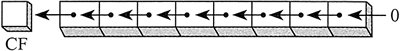
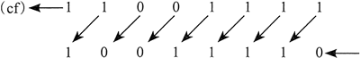

首页 > 编程笔记
汇编语言SAL（算术左移）和SAR（算术右移）指令：将操作数左/右移一位
SAL（算术左移）指令的操作与《SHL指令》一节中的 SHL 指令一样。每次移动时，SAL 都将目的操作数中的每一位移动到下一个最高位上。最低位用 0 填充；最高位移入进位标志位，该标志位原来的值被丢弃：
如，二进制数 1100 1111 算术左移一位，得到 1001 1110：
SAR（算术右移）指令将目的操作数进行算术右移：

SAL 与 SAR 指令的操作数类型与 SHL 和 SHR 指令完全相同。移位可以重复执行，其次数由第二个操作数给出的计数器决定：

如，二进制数 1100 1111 算术左移一位，得到 1001 1110：

SAR（算术右移）指令将目的操作数进行算术右移：
SAL 与 SAR 指令的操作数类型与 SHL 和 SHR 指令完全相同。移位可以重复执行，其次数由第二个操作数给出的计数器决定：
SAR destination, count
下面的例子展示了 SAR 是如何复制符号位的。执行指令前 AL 的符号位为负，执行指令后该位移动到右边的位上：
mov al, 0F0h ; AL = 11110000b (-16)
sar al, 1 ; AL = 11111000b (-8) , CF = 0
有符号数除法
使用 SAR 指令，就可以将有符号操作数除以 2 的幂。下例执行的是 -128 除以2³，商为 -16：
mov dl, -128 ; DL = 10000000b
sar dl, 3 ; DL = 11110000b
AX 符号扩展到 EAX
设 AX 中为有符号数，现将其符号位扩展到 EAX。首先把 EAX 左移 16 位，再将其算术右移 16 位：
mov ax, -128 ; EAX = ????FF80h
shl eax, 16 ; EAX = FF800000h
sar eax, 16 ; EAX = FFFFFF80h
关注公众号「站长严长生」，在手机上阅读所有教程，随时随地都能学习。内含一款搜索神器，免费下载全网书籍和视频。

微信扫码关注公众号